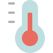

<div matDialogTitle>Signos Vitales</div>
<div class="container">
  <form [formGroup]="formSignosVitales">
    <mat-form-field class="p100">
      
      <span matPrefix>&nbsp;&nbsp;</span>
      <input type="number" matInput placeholder="Temperatura" formControlName="sv_temp" required>
      <span matSuffix>&nbsp;ºC</span>
    </mat-form-field>
    <br>
    <mat-form-field class="p100">
      
      <span matPrefix>&nbsp;&nbsp;</span>
      <input type="number" matInput placeholder="Frecuencia Respiratoria" formControlName="sv_fr" required>
      <span matSuffix>&nbsp;rpm</span>
    </mat-form-field>
    <br>
    <mat-form-field class="p100">
      
      <span matPrefix>&nbsp;&nbsp;</span>
      <input type="number" matInput placeholder="Frecuencia Cardíaca" formControlName="sv_fc" required>
      <span matSuffix>&nbsp;bpm</span>
    </mat-form-field>
    <br>
    <mat-form-field class="p100">
      
      <span matPrefix>&nbsp;&nbsp;</span>
      <input type="number" matInput placeholder="Saturación de Óxigeno" formControlName="sv_so" required>
      <span matSuffix>&nbsp;%</span>
    </mat-form-field>
    <br>
    <button mat-raised-button mat-dialog-close>Cancelar</button>
    <button mat-raised-button color="primary" [mat-dialog-close]="formSignosVitales.value" [disabled]="!formSignosVitales.valid" class="btn-submit">Registrar</button>
  </form>
</div>